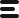

<mat-toolbar class="toolbar-container" fxLayout="row">
    <!-- <button mat-icon-button class="menu-btn" *ngIf="isUserLoggedIn()" (click)="leftnav.toggle()">
        
    </button> -->
    <div class="logo" routerLink="/home">
        
    </div>
    <span class="toolbar-spacer"></span>
    <button mat-icon-button matTooltip="About Us" class="mr-5px" (click)="onAboutClick()">
        <mat-icon>info</mat-icon>
    </button>
    <button mat-icon-button matTooltip="Contact Us" class="mr-5px" (click)="onContactClick()">
        <mat-icon>contact_support</mat-icon>
    </button>
    <button mat-icon-button matTooltip="Disclaimer" class="mr-5px" (click)="onDisclaimerClick()">
        <mat-icon>privacy_tip</mat-icon>
    </button>
    <button mat-icon-button matTooltip="Feedback" class="mr-5px" (click)="onFeedbackClick()">
        <mat-icon>feedback</mat-icon>
    </button>
    <button class="user-icon" *ngIf="isUserLoggedIn()" mat-icon-button matTooltip="{{ userName }}"  [matMenuTriggerFor]="userMenu">
        
    </button>
</mat-toolbar>
<mat-sidenav-container autosize class="custom-sidenav-container">
    <mat-sidenav #leftnav class="left-sidenav-container" mode="side" [opened]="true">
        <ul class="menu-container">
            <li class="menu-item" *ngFor="let menuItem of this.commonService.userMenu" routerLink="{{ menuItem.link }}" routerLinkActive="menu-item-active">
                <div routerLinkActive="active-menu-item-container">
                  
                </div>
                <span class="menu-item-label" routerLinkActive="active-menu-text">{{ menuItem.name }}</span>
            </li>
        </ul>
    </mat-sidenav>
    <mat-sidenav-content class="main-container-content">
        <div class="main-container">
            <router-outlet></router-outlet>
        </div>
    </mat-sidenav-content>
    <mat-sidenav #rightnav position="end" mode="side" class="sidenav-container"
    [opened]="newsOpen()||chatOpen()">
        <app-chat-panel *ngIf="chatOpen()"></app-chat-panel>
    </mat-sidenav>
</mat-sidenav-container>

<mat-menu #userMenu="matMenu" class="comment-action-menu">
    <button mat-menu-item>
        <mat-icon>person</mat-icon>
        <span>Profile</span>
      </button>
      <button mat-menu-item>
        <mat-icon>manage_accounts</mat-icon>
        <span>Account</span>
      </button>
      <mat-divider></mat-divider>
      <button mat-menu-item (click)="onLogoutClick()">
        <mat-icon>logout</mat-icon>
        <span>Logout</span>
      </button>
</mat-menu>
